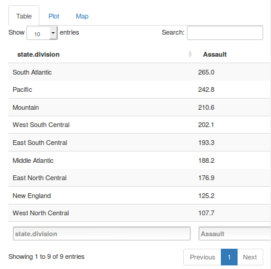
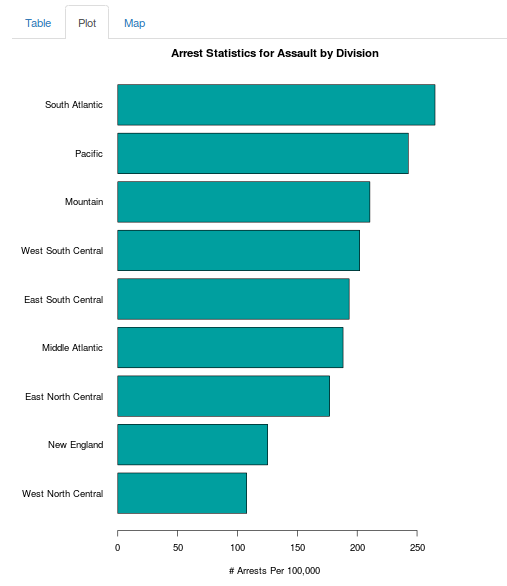
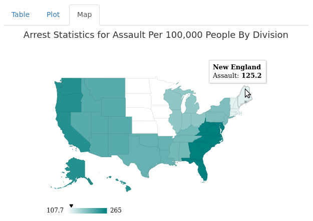

\[GroupArrests = \frac{\sum_{i=1}^n StatePopulation_i StateArrests_i}{\sum_{i=1}^n StatePopulation_i}\]
## Assault state.pop.k state.division
## New Jersey 159 7333 Middle Atlantic
## New York 254 18076 Middle Atlantic
## Pennsylvania 106 11860 Middle Atlantic
## state.division Assault
## 2 Middle Atlantic 188.2
(159*7333+254*18076+106*11860)/(7333+18076+11860)
## [1] 188.2103
|  |  |

/
#